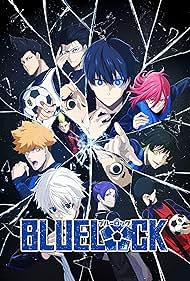

Season 1 (2022)
Yoichi Isagi enters the Blue Lock facility and competes against 299 other strikers in brutal small-sided matches to awaken his ego and become Japan's deadliest striker.

Sports, Shonen, Psychological
A controversial coach named Jinpachi Ego isolates 300 of the country's best young strikers in a prison-like facility, forcing them into intense competitions to forge the ultimate, egoistic goal-scorer.
Yoichi Isagi enters the Blue Lock facility and competes against 299 other strikers in brutal small-sided matches to awaken his ego and become Japan's deadliest striker.